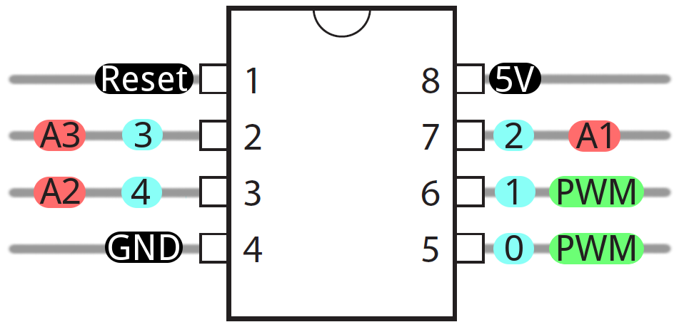

Homemade Hardware
Stuff
-
Sparkfun's explaination of what an Integrated Circuit (IC) is.
-
Arduino's explaination of what happens when you hit Upload.
-
Here's an overview from Adafruit on using the Board Manager to install third-party boards. This tutorial tells you to download Adafruit's boards, but can be applied to all other boards.
-
Here is a list of all third-party boards supported by Arduino. Simple use the URL's from this page (they end in a .json) and paste them into the Preferences input, as explained in the tutorial above.
-
Install ATtiny85 into your Arduino IDE, using the Board Manager.
Bootload and Code on the ATtiny
-
Turn your Uno into an In-System-Programmer (ISP) that can flash other AVR microcontrollers.
Select Arduino Uno in the IDE
upload the example sketch "File/Examples/ArduinoISP".
-
Go to the menu Tools->Programmer: and select Arduino as ISP (do NOT select "ArduinoISP", that is totally different).
-
Select "ATtiny25/45/85" from Tools->Board
- You need "ATTinyCore" installed, see link above to install if you don't see it in your menu
-
Check that the settings are correct:
- processor = ATtiny85
-
clock = internal 1mhz
- ... or 8mhz or 16mhz are OK. Just make sure it's the same when both "flashing the bootloader" and uploading your code later on.
-
Wire your ATtiny85's SPI and RESET pins to the Arduino Uno's SPI and D10 pins:

-
Flash the bootloader! This will set the ATtiny85 to the clock speed you selected. Go to Tools->Burn Bootloader (make sure ATtiny85 is the target board, and you have "Arduino as ISP" as your programmer). If you get an ERROR, either:
- you're not powering the ATtiny85 correctly
- you have incorrect wiring or a broken cable
- you don't have "Tools/Programmer/Arduino as ISP" selected as your programmer (not "ArduinoISP")
- you don't have the "File/Examples/ArduinoISP" sketch uploaded to your Arduino Uno
- you don't have the ATtiny85 selected as your target board
- you accidentally broke you ATtiny85 or the Arduino Uno. Try another, and if it still errors, see reasons above.
-
Make something :) Here is a link to ATtiny85 pin description (Arduino pins are labelled blue in the picture), and also other hardware descriptions for connecting to different sensors and outputs.

[FYI] ATmega328p on a Breadboard
-
Arduino's tutorial on bootloading an ATmega328p on a breadboard using an Arduino Uno as the programmer
-
Arduino's tutorial on making a breadboard Arduino, which includes the supporting power, timing, and communications circuitry.
Bootloaders
Production #5
A Bootloader is a small piece of code that we usually need to put on our microcontrollers before we can program them with Arduino. Any board that works with the Arduino IDE has an "Arduino" bootloader inside it, giving it the ability to load code from the Arduino IDE.
Here's an explanation of what the Arduino Bootloader is from Sparkfun.
Whenever code is transfered from a computer to a microcontroller, something must be in the middle acting as a converter. This is a usb-to-serial converter, or a usb-to-spi converter, or something similar. These middle devices are call In-System Programmers (ISP).
Here's a tutorial on using Arduino as an ISP (In System Programmer)
Here's an example of adding a bootloader to an nRF51822, so that we can program it with Arduino. Unlike Atmel chips which use the mkii as an ISP, the nRF5x chips use the J-Link as an ISP.